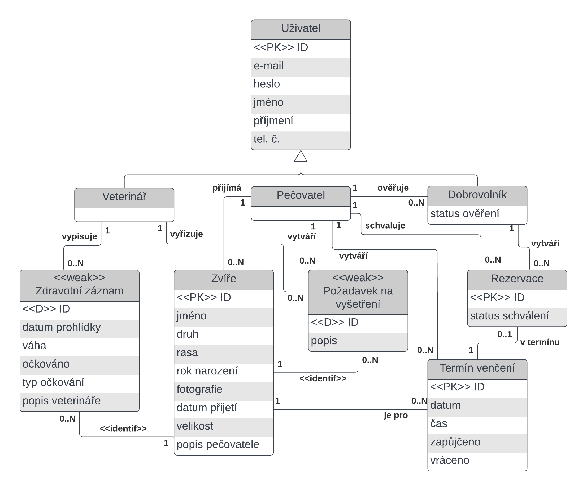

Pro testování mù¾ete pou¾ít následující u¾ivatele:
| Login | Heslo | Role |
|---|---|---|
| admin@admin.com | admin | Administrátor |
| care@example.com | care | Peèovatel |
| volunteer@example.com | volunteer | Dobrovolník |
| vet@example.com | vet | Veterináø |
Pøilo¾te odkaz na komentované video demostrující pou¾ití informaèního systému. Zamìøte se na pøípady u¾ití definované zadáním (napø. registrace u¾ivatele, správa u¾ivatelù a èinnosti jednotlivých rolí). Video nahrajte napøíklad na VUT Google Drive, kde ho bude mo¾né pøímo spustit z odkazu.
Informaèní systém 'Zvíøecí útulek' je implementován pomocí kombinace frameworkù umo¾òujících modulární architekturu. Interaktivní u¾ivatelské elementy na¹eho systému jsou postaveny pomocí html obohaceného o styly z frameworku Tailwind.css. Tyto elementy obsluhuje kontrolerová vrstva postavena ve frameworku Vue.js. Vue.js pak pomocí slu¾by FastAPI Python vysílá po¾adavky, které jsou v jazyce Python zpracovány. Kombinace Vue.js a Python tak tvoøí aplikaèní vrstvu na¹eho systému. Databáze systému je postavena na PostgreSQL, pøièem¾ objektovì-relaèní model je abstrahován pomocí knihovny SQLAlchemy. Vyu¾ití této knihovny pøípadnì umo¾òuje snadnou migraci na systémy postaveny nad jiným systémem, napø. MySQL.
Systém je postaven pomocí nìkolika stránek, je¾ jsou doplòovány elementy a modulárními komponenty, které jsou u¾ivateli zpøístupnìny na základì jeho/jejich práv.
U¾ivatel je nejprve pøivítán hlavní obrazovkou. Na základì pøedchozí bì¾ící relace je pøímo pøihlá¹en a mù¾e pokraèovat v operacích na základì vlastních práv, pøípadnì je systémem rozpoznán jako neregistrovaný u¾ivatel.
Nehledì na práva si pak tento u¾ivatel mù¾e zobrazit ve¹kerá zvíøata, která jsou aktuálnì v útulku, pomocí prokliku na "View All Animals". View All Animals po¹le po¾adavek na zobrazení v¹ech zvíøat aktuálnì se nacházejících v útulku. U¾ivatel pak dostane základní výèet informací o zvíøeti a mù¾e pøi kliknutí na okénko zvíøete si mù¾e zobrazit jeho detailní popis.
Popis zvíøete je pøístupný v¹em u¾ivatelùm systému stejný. Co se ale mìní na základì práv je mno¾ina operací, reprezentovaných interaktivními tlaèítky, které nad zvíøetem mù¾e provést. U¾ivatel bez vytvoøeného úètu dostane upozornìní na mo¾nost venèení pøi tvorbì nového úètu/ pøihlá¹ení se. Pøihlá¹ený dobrovolník doká¾e mo¾nost si zobrazit rozvrh zvíøete a pøípadnì si vytvoøit rezervaci venèení. Peèovatel pak mù¾e zvíøeti zobrazit rozvrh, podat ¾ádost na veterináøe na zvíøecí vy¹etøení, editovat informace o zvíøeti a zobrazit si zdravotní záznamy zvíøete. Veterináø pak má mo¾nost dostat se ke zdravotním kartám zvíøete. Administrátor pak dostává kombinaci práv peèovatele a veterináøe.
Dal¹í mo¾ností, která se nabízí ji¾ z hlavní nabídky je pøihlá¹ení u¾ivatele. U¾ivateli se zobrazí formuláø, který, kdy¾ opatøen údaji korelujícími se záznamem u¾ivatele v databázi, provede pøihlá¹ení u¾ivatele do systému. U¾ivatel se z této nabídky té¾ mù¾e dostat k registraènímu formuláøi, pokud si tvoøí nový úèet. Oba formuláøe jsou opatøeny kontrolami správného formátu vstupu. Heslo je podrobeno hashování ||||| NECO COOL O HASHOVANI |||||.
Rozvrh zvíøete je realizovaný pomocí týdenního zobrazení hodin pomocí interaktivních okének, je¾ na základì rùzného zbarvení (popsaného v legendì pod samotným rozvrhem) u¾ivatele informují o èasové obsazenosti zvíøete. Verifikovaný u¾ivatel má mo¾nost si podat ¾ádost o rezervaci na volné okénka, pøípadnì zobrazit si vlastní rezervace a potvrdit jejich zru¹ení. Peèovatel mù¾e vytvoøit nové volné èasové mo¾nosti pro venèení, zobrazit si rezervace, pøes proklik detail u¾ivatele, co rezervaci podal a její pøípadné potvrzení nebo zru¹ení. Informace o nadcházejících i probìhlých rezervacích pro ve¹kerá zvíøata si u¾ivatel mù¾e zobrazit na stránce 'My Reservations' a peèovatel na stránce 'Edit Reservations'. V této nabídce je peèovateli umo¾nìno si do systému poznamenat zda bylo zvíøe vydané dobrovolníkovi a zda bylo následnì navráceno.
Podobnì jako nabídka s detaily zvíøete, tak také u¾ivatelé disponují oknem, které shrnuje jejich údaje. U¾ivatelé také disponují nabídkou pro zmìnu vlastních údajù, pøípadné doplnìní telefonního èísla. U¾ivatele mù¾e pøidávat do systému peèovatel a administrátor. V systému zároveò jasnì vidí kteøí dobrovolníci jsou nevalidováni a tedy mohou se snadno rozhodnout o jejich potvrzení, èi odmítnutí.
Pro zvíøáta mohou peèovatelé vytvoøit po¾adavky na o¹etøení, kontrolu veterináøem. Veterináøi se pak zobrazí v pøíslu¹ném oknì tento po¾adavek, je¾ nabývá neschváleného statusu. Jakýkoli veterináø pak mù¾e na tento po¾adavek zareagovat a pøidat zvíøeti do systému zdravotní záznam, s popisem a pøípadném popisu vakcinace.
V pøípadì odstranìní zvíøete nebo u¾ivatele ze systému se provede tzv. soft-delete. U polo¾ek si pak ukládáme status smazání, aèkoli k fyzickému odstranìní záznamu z databáze nedojde. Díky tomu si zamìstnanci útulku i dobrovolníci mohou stále zobrazovat historii ve¹kerých interakcí.
Co se týèe uchovávání 'session' dat pøi interakci se systémem||||| SAM SIETOCKY|||||.
Ukázka schématu databáze:
XDD VTIPALCI SI MYSLI ZE MAME NEJAKE CHYBY.